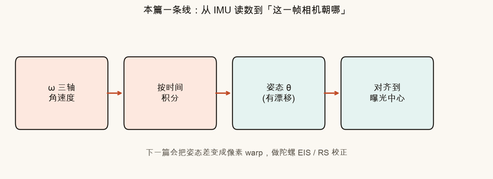
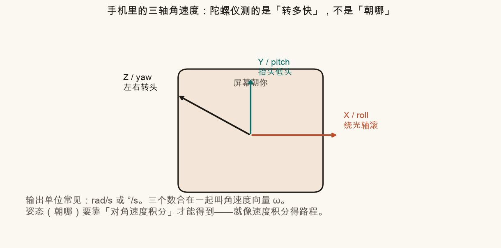
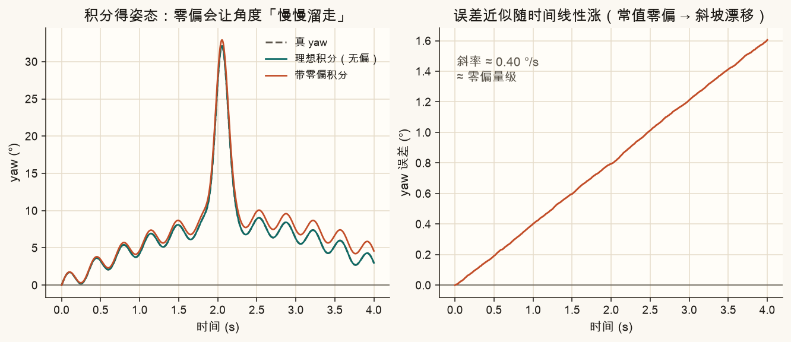
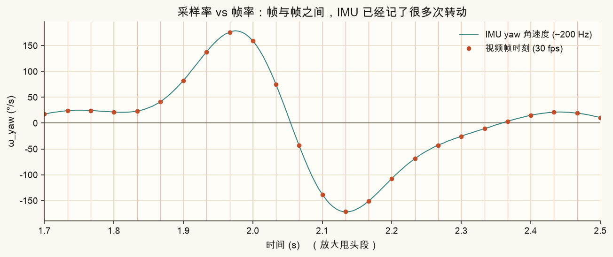
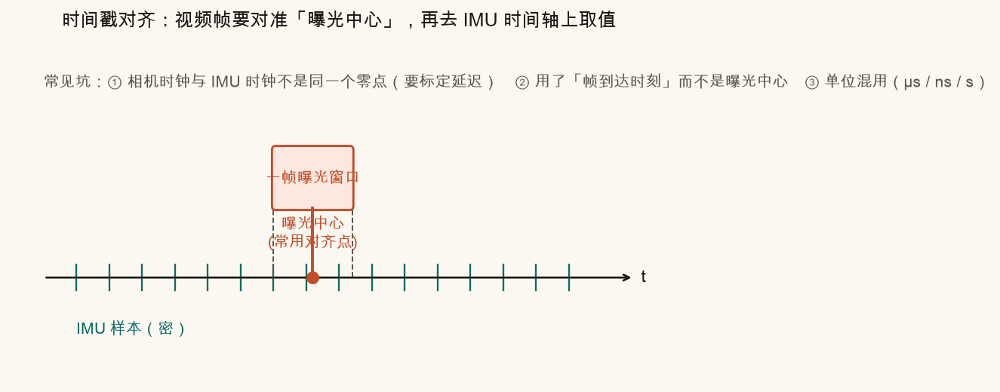
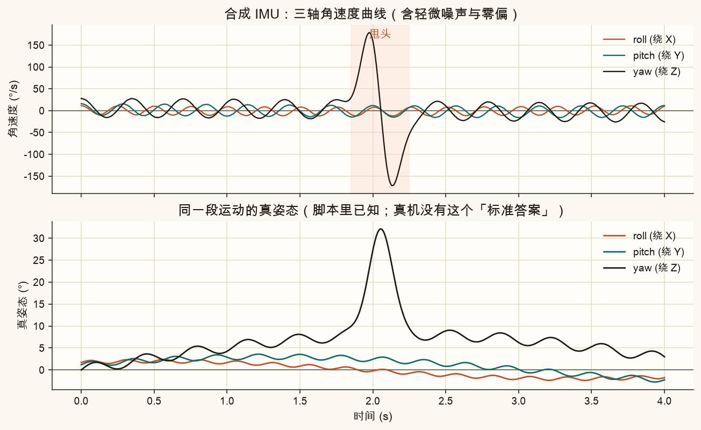
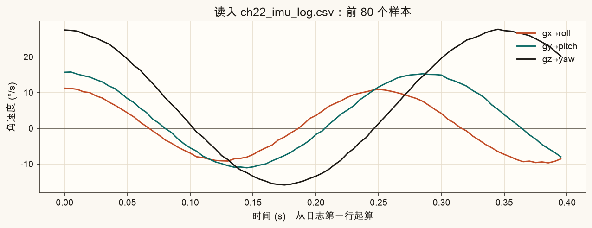
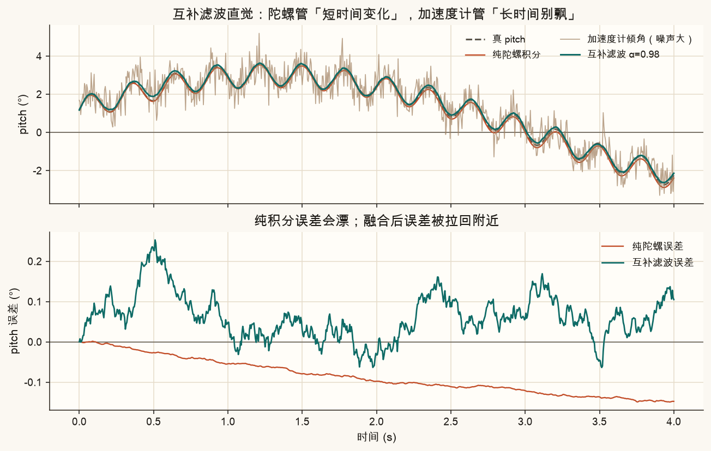

第 22 篇 · 重点 · 陀螺与 IMU · 约 70 分钟
手机防抖、运动相机 EIS，常常不只靠画面特征——机身里还有一颗小传感器在报「我正在转多快」。本篇从零讲清：三轴角速度是什么、怎样积分成姿态、为什么会漂、采样为何比视频密、时间戳如何对齐到曝光中心，以及互补滤波怎样用加速度计「拉一把」。
开车时，仪表盘告诉你速度（公里/小时）。想知道「开了多远」，要把速度按时间累加——这叫积分。
陀螺仪也一样：它直接给你的是角速度（每秒转多少度），不是「手机现在朝哪」。朝向（姿态）= 把角速度按时间积起来。
姿态变化 ≈ 角速度 × 时间间隔
白话：这一小段时间里，如果你以 30°/s 转了 0.01 秒，姿态大约多转了 0.3°。把每一小段加起来，就得到整条姿态曲线。

IMU = Inertial Measurement Unit（惯性测量单元）。手机里常见组合：陀螺仪（角速度）+ 加速度计（线加速度 / 重力方向）+ 有时还有磁力计。本篇主角是陀螺；加速度计用来讲「如何纠正漂移」。
手机可以绕三个互相垂直的轴转。行业里常叫：
陀螺仪每个采样时刻输出三个数：ωx, ωy, ωz。单位常见是 rad/s（弧度/秒）或 °/s（度/秒）。换算：1 rad/s ≈ 57.3 °/s。

不同手机的轴定义、传感器坐标系与相机坐标系可能不一致。工程上要做外参标定（陀螺 → 相机）。本篇先假定轴已经对齐，专注「角速度 → 姿态」这条数学直觉。
离散时间上，最朴素的做法（本篇脚本用的梯形积分）：
θ[k] = θ[k−1] + ½ · (ω[k] + ω[k−1]) · Δt
白话：用相邻两次角速度的平均，乘上间隔 Δt，加到上一时刻的角度上。
理想世界里，这样能还原出真实转动。真实陀螺有两件麻烦事：
常值零偏 → 姿态误差 ≈ bias × 时间 （斜坡漂移）

本篇简化：把 roll / pitch / yaw 当成三个近似独立的角度来积分，方便入门。真三维姿态要用旋转矩阵或四元数，避免大角度时轴耦合。下一篇做 EIS 时会再碰到「用旋转去 warp 像素」。
下面用一段合成的 yaw 角速度（含一次「甩头」）。左侧滑块模拟陀螺零偏；右侧对比真姿态与积分姿态。把零偏拧大，看橙色曲线怎样慢慢离开青色真值。
视频常见 30 fps：大约每 33 ms 来一帧。手机 IMU 常是 200–1000 Hz：每 1–5 ms 就记一次角速度。
这意味着：两帧画面之间，手机其实已经转了很多「小步」。若只用帧与帧之间的视觉跟踪，会错过中间细节；有陀螺时，可以把帧间转动积得更细——这对快速甩动、以及第 21 篇的 Rolling Shutter（一行一行的时间差）特别有用。

防抖时我们要问的不是「IMU 第 k 个样本对应哪一帧」，而是：
这一帧图像，大致代表哪个时刻的相机朝向？
卷帘快门下，每一行曝光时刻还不同（第 21 篇）。即便先简化成「整帧一个时刻」，也通常不取「帧数据到达 CPU 的时间」，而取曝光中心：
talign = t打开快门 + 曝光时长 / 2
白话：曝光 10 ms，就认为这帧代表「打开后 5 ms」那一刻的姿态。再到 IMU 时间轴上，用最近邻或线性插值取出该时刻的 ω，并积分到对应姿态。

三个常见坑：① 相机时钟和 IMU 时钟不是同一个零点——存在固定或缓慢变化的延迟，需要标定；② 把「编码时间戳 / 文件写入时间」当成曝光时间；③ 单位搞混（µs、ns、秒）。对不齐时，稳像会「越补越晃」或出现固定相位的残差。
真实项目里，IMU 往往是 CSV / 二进制流。本篇脚本生成了一份合成日志，方便你在没有真机数据时也能练手：
assets/images/ch22_imu_log.csv：约 4 秒、200 Hz，含慢摇、手抖、一次甩头ch22_imu_log_readme.txt：字段说明字段：
| 列名 | 含义 | 单位 |
|---|---|---|
timestamp_us | 时间戳（任意起点，用差值算 Δt） | 微秒 |
gx_rad_s 等 | 三轴角速度 | rad/s |
ax_g 等 | 三轴加速度（合成重力投影） | g |


import csv, numpy as np
# 读时间戳（µs）→ 换成从 0 开始的秒
# ω 若是 rad/s，画图时常乘 180/π 变成 °/s
# Δt[i] = (ts[i] - ts[i-1]) * 1e-6
# θ[i] = θ[i-1] + 0.5 * (ω[i] + ω[i-1]) * Δt[i]只信陀螺：短时间跟手，长时间漂移。加速度计在近似静止或匀速时，主要感受重力，可以从重力方向估出 roll / pitch（抬头低头、左右倾斜）。但加速度计对震动很敏感，直接当姿态会抖；而且估不出 yaw（绕竖直轴转时重力方向不变）。
互补滤波的直觉（一阶版）：
θ = α · (θ上次 + ω·Δt) + (1−α) · θ加速度计
白话：陀螺负责「刚才突然转了多少」；加速度计负责「别让角度永远歪着」。两者一个管高频、一个管低频，所以叫「互补」。

手机量产稳像里还会见到 Kalman / 更复杂的视觉-惯性融合。互补滤波不是终点，但是理解「为什么要融合」的最好脚手架。
青色虚线：真 pitch。橙色：纯陀螺积分（带零偏）。绿色：互补滤波。拖动 α，观察绿色如何在「跟手」和「不漂」之间权衡。
source .venv/bin/activate
MPLCONFIGDIR=/tmp/mpl-cache python code/ch22_gyro_imu.py终端应打印「自检通过」以及多条「已保存」。会写出：
ch22_pipeline.png、ch22_axes.png、ch22_omega_curve.png、ch22_integrate_drift.png、ch22_sample_vs_frame.png、ch22_timestamp_align.png、ch22_complementary.png、ch22_log_preview.pngassets/images/ch22_imu_log.csv + ch22_imu_log_readme.txtch22_my_attitude.png、ch22_my_exposure.png（只跟顶部「改这里」）打开 code/ch22_gyro_imu.py 顶部：
GYRO_BIAS_DEG = 0.8 # yaw 方向额外零偏（°/s）
COMP_ALPHA = 0.98 # 互补滤波信陀螺的比例
EXPOSURE_MS = 10.0 # 曝光时长，影响曝光中心说明图GYRO_BIAS_DEG 改成 0.0，再改成 2.0，对比 ch22_my_attitude.png 上半幅 yaw 漂移。COMP_ALPHA 改成 0.90 与 0.995，看下半幅 pitch：太小会更跟加速度计抖，太大则纠正变慢。EXPOSURE_MS 改成 20，看 ch22_my_exposure.png 里对齐时刻是否变成「打开 + 10 ms」。先自己答，再展开。脚本里另有 ≥5 项数值自检。
角速度（°/s 或 rad/s）。姿态要靠积分（或融合）得到。
约 0.5 × 20 = 10°。常值零偏 → 误差随时间近似线性增长。
帧间手机仍在转；密采样才能细积分，也便于按行做 RS 校正。30 fps 约 33 ms 一帧，200 Hz IMU 约每 5 ms 一次。
曝光中心 t₀ + 6 ms。再到 IMU 时间轴上取值 / 插值。
更信陀螺积分。加速度计靠重力只能帮 roll/pitch，估不出绕竖直轴的 yaw。
积分结果大约偏 180/π ≈ 57 倍，姿态完全不可用。先统一单位再算。
有了「每一时刻相机朝哪」，下一篇把姿态序列变成像素 warp：相对平滑目标姿态的差 → 陀螺辅助 EIS，并初步用行时间 + 角速度减轻 Rolling Shutter 斜切。